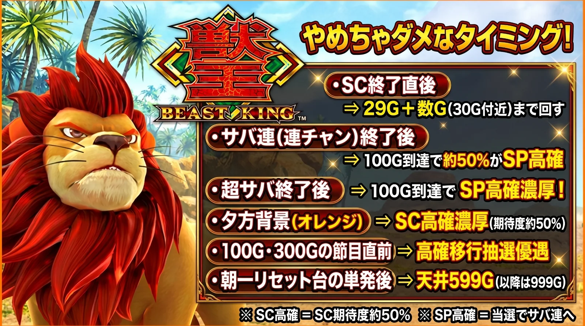

やめちゃダメなタイミング
確認日：2026年10月11日

この画像の内容をテキストで見る
① SC（サバンナチャンス）が終わった直後
- どうする
- 29G＋数ゲーム回してからやめる
- 理由
- SC（AT）の後は必ず「潜伏」（29G）に入る。ストックがあれば放出されてサバ連（SCの連チャン）になり、ストックがなくてもレア役でサバ連への昇格を抽選する。潜伏を抜けた30G目からSC高確に移ることもある
② サバ連（SCの連チャン）が終わった後
- どうする
- 100G＋αまで回す
- 理由
- サバ連の後は、100G到達で約50%がSP高確へ移る。SP高確中にSCに当たればサバ連濃厚。ゲーム数と連チャンしたかどうかは、データカウンターで確認できる
③ 超サバが終わった後
- どうする
- 100G＋αまで回す
- 理由
- 超サバの後は、100G到達でSP高確濃厚
④ 液晶の背景が夕方（オレンジ）になった
- どうする
- 背景が戻るまで様子を見る
- 理由
- 夕方の背景はSC高確に入った合図!?（示唆）。SC高確中は全役でSCを抽選していて、当選期待度は約50%
⑤ 100G・300Gの直前
- どうする
- またいで、夕方背景にならないか確認する
- 理由
- 100GごとにSC高確への移行を抽選する。100Gと300Gは期待度が高い
⑥ 朝一（設定変更後）の台で、SCが単発で終わった
- どうする
- 599Gの天井が残っている可能性があるので、ゲーム数を見てから判断する
- 理由
- 設定変更後は天井が599G＋α（590〜599Gで発動）に短縮され、サバ連に入るまで続く。一度サバ連に入ると、その後の天井は999G＋α。設定変更かどうかを見分ける方法は見つかっていない
やめていいのは
- こんな時
- SC後の29G（サバ連・超サバの後は100G＋α）を回し終えて、夕方背景もなく、天井も遠い時
「濃厚」は解析サイトの表記に合わせています。画像では④を「SC高確濃厚」としていますが、解析サイトの表記は「突入の合図!?」「示唆」です。画像の⑥「以降は999G」は、サバ連に入った後のことです（単発が続くあいだは599Gのまま）。画像下の「SP高確＝当選でサバ連へ」は、解析サイトでは「サバ連濃厚」です。②③について、アルテマはサバ連後・超サバ後も「29G回してやめ」としています（ほかの4サイトは100G、または100G＋α）。サバ連後の100Gのゾーンは、前回のサバ連の獲得枚数が1000〜1400枚だと期待値マイナスのリスクもあり!?（実戦値。ちょんぼりすた・スロベース）。画像には入れていませんが、天井は通常999G＋α（恩恵はSC・BIG・REGのいずれか）で、潜伏中に動物が帰る・消える・引っ込む演出にリプレイが重なるとSC潜伏濃厚です。導入直後の新台で、ちょんぼりすたのやめどきは「暫定」の表記です。
情報元
- スロベースやめどき・即やめ判断（SC後は潜伏29G）↗
- イチカツ！天井恩恵・やめどき・朝一リセット↗
- ちょんぼりすたスペック・設定判別・天井・解析まとめ↗
- 一撃（1geki）天井とやめどき・朝一リセット↗
- アルテマ天井・狙い目・やめどき↗
2サイト以上で内容が一致している項目を中心にまとめています（サイト間で違う点は上の注意書きに書いています）。実機の画面や最新の解析は情報元でご確認ください。
この図解をXでシェア